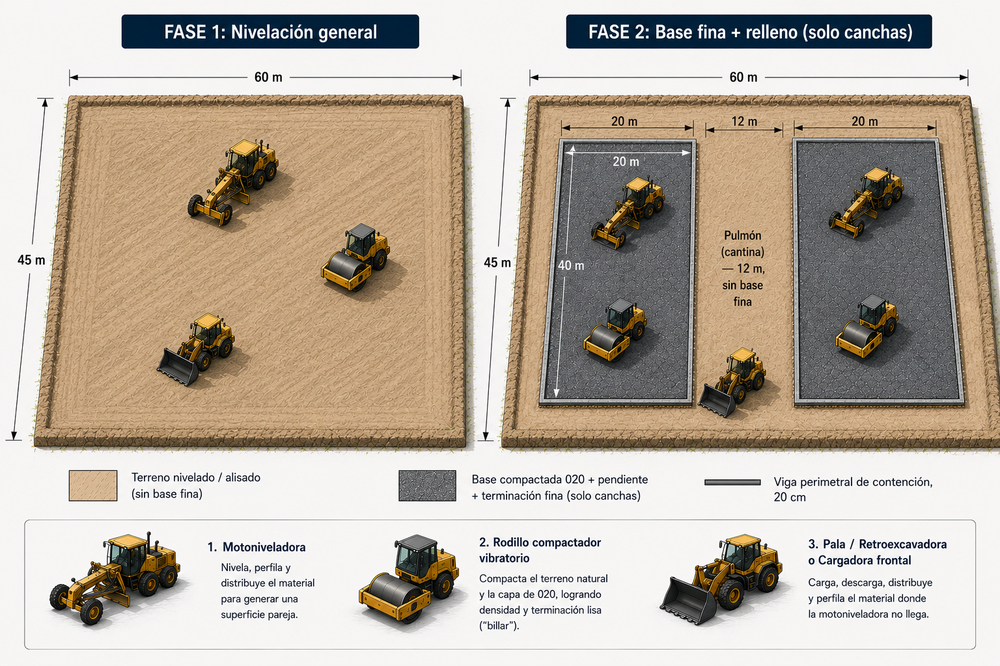

Fases del movimiento de suelo
Esquema del orden de obra sobre el predio de 45 × 60 m: primero la nivelación general de todo el terreno, después la base fina (020 compactado + terminación) solo debajo de las dos canchas, dejando el pulmón central (cantina, 12 m) sin base fina.

Fase 2 — Base fina + relleno (solo canchas): 020 compactado + pendiente + terminación fina debajo de cada cancha de 20×40 m, con viga perimetral de contención de 20 cm. El pulmón central (12 m, donde va la cantina) queda sin base fina.